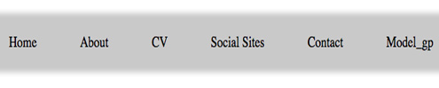

CSY-1018: Web Development
Bsc.(HONS) Computing
CSY-1018: Web Development
Assignment: Term 1
Title: CV Website (design and implement)
Name: Bigyan Pathak
UN Id: 18413698
Getting started-----------------------------------------------
Sketch----------------------------------------------------------
Wireframes---------------------------------------------------
Logo------------------------------------------------------------
Navigation----------------------------------------------------
Starting--------------------------------------------------------
Intermediate-------------------------------------------------
Part 1-----------------------------------------------
Part 2-----------------------------------------------
Part 3-----------------------------------------------
Part 4-----------------------------------------------
Part 5-----------------------------------------------
Part 6-----------------------------------------------
Advanced----------------------------------------------------
Animation----------------------------------------
Responsive---------------------------------------
Validation
Getting Started:
I collected the general idea by looking others websites, templets and video to develop my first term project of developing a cv-website. First I spend my time to sketch my site wireframe. I developed my cv-website using HTML and CSS (HTML5 and CSS3 properties), but I found most of website was developed by using Bootstrap, Jquary and other programming language. Pradeeprajthapaliya.com.np is the website from where I collected the general idea.
Sketch

Wireframes
>
logo
This is my logo for my cv-website. The logo was made from designimo.com And I make a some change from photoshop (like saturation....). The Logo holds my name Navigation Navigation bar is one of the most important part of website. Navigation contain home, about, cv social, contact and report in our project. Navigation is a section containing web pages.
Navigation
Starting
I spend time on research for my cv-website. I visited lots of portfolio website to collect ideas. I visited different site like free-css.com, tooplate.com to collect more idea about themes. Visited different blogs and website blog.visme.com, aeeeards.com for color combination. Then I started learn more about HTML tags, CSS properties, class and object. Learn photoshop to make a logo and other image. Then after I able to make my simple home page(I.e. index page).
Intermediate
Part1:Home Page
In Intermediate , I able to make my home page I.e. index page. I divided my body into three main part. -header -section -footer I made header with two main div (I.e. for logo and for navigation) navigation contain home, about, cv, social, contact and report page. I made my section with 3 main div, containing photo which make you easy to know your current page. Section also containing my photo and some text with animations. I made footer with three main div with my personal information and copyright law. Header and Footer is same for all pages.
Photo of Home Page
Part2:About Page
About page have same header and footer like index page but section was different. I made section with 2 main div (I.e. parent div) , first is photo which is same like photo div in index page. Second div also contain my photo and some text.
Part3:Cv Page
I made my cv page with two main div and sub div. Main div was make with using flex properties.
Part4:Social Media
I made my social media page with three main div and sub div. First div contain social links which directly link on my social site. Second div contain with one image and third div have my up coming social site photo with links.
Part5:Contact Page
I made my contact page with three main div and sub div. First div have google maps which show my permanent address. Second div have contact form and third one have my personal information like address, phone and email address.
Report Page
Report page contain whole my project report. When we click on the report, it's open in different tabs. In report page all report is written in HTML format.
Advance
In advanced, I have worked for animation and responsive of my site.
Part1:Animation
I have used the animation in many place in logo, navigation and footer etc... I simply used hover effect, transform properties and transition properties in my website. Animation is one of the main part in web site, it helps to make a page more attractive. Animation helps to make busy user and user spend more time in our website.
Part2:Responsive
I spend lots of time to research and making a responsive page for my web site. I make my page responsive using media query and maintain proper height, width, margin and padding. My portfolio is look same in pcs and tablets but different in mobile. In mobile the logo display in full width and navigation display in column format. Section and footer is also display in column format.